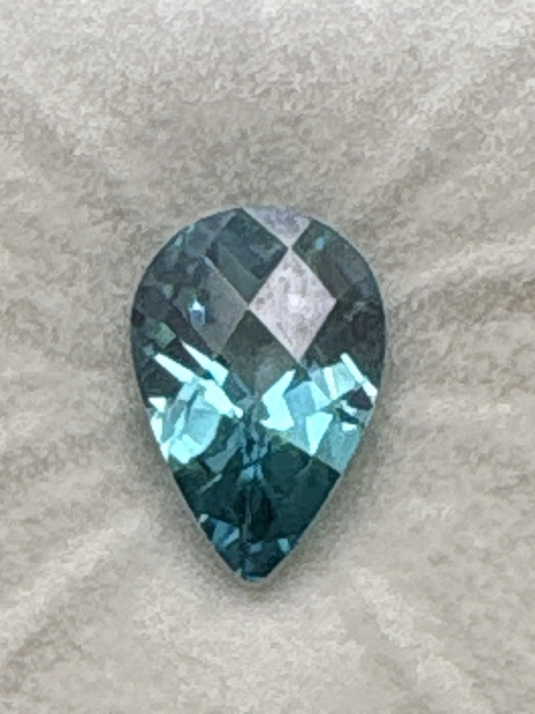

The Gem Drawer › No. 2

Teal blue-green pear, 10 x 15 mm, labeled 5.10 ct.
| Catalogue no. | #2 |
|---|---|
| As labeled | Ceylon Nickel Topaz |
| Shape / cut | Pear |
| Weight | 5.1 ct |
| Measurements | 10 x 15 |
| Colour | Teal / blue-green |
| Clarity / condition | Eye-visible inclusions present (see photos); not professionally graded |
Interested in this stone, or in the collection as a whole? Terry VanWormer can answer questions about it.
Click here to inquireor email Terry directly at maxrebo34@gmail.com